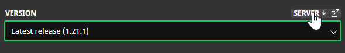
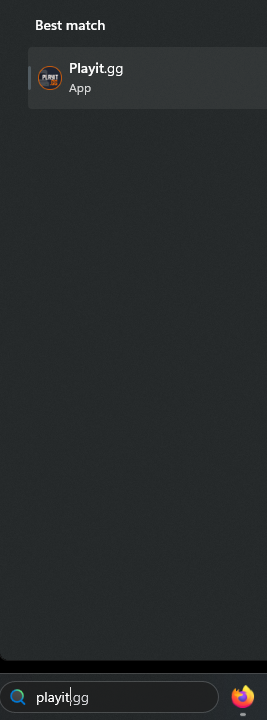
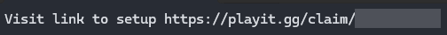
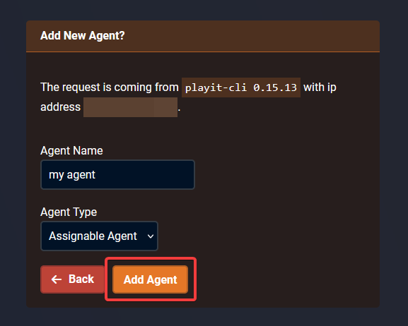
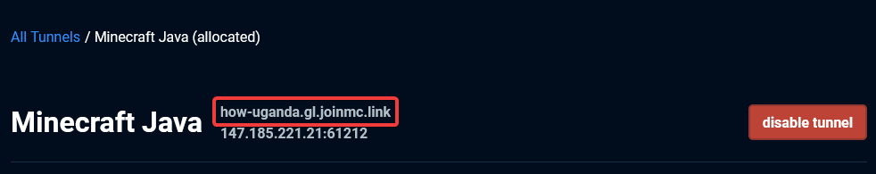

Nowadays, self-hosting your own Minecraft server might be more optimal than purchasing a server. The main benefits are that it's free and you have full control of your server. However, self-hosting can be a confusing and complicated setup which is why I wrote this post.
Create a dedicated folder (aka, the root folder) for your server, it can be located anywhere. I named this folder playit-server.
Create a folder inside the root folder for the server (aka, the server folder). I named this folder server.
I recommend using Eclipse Temurin to run your Minecraft server since it receives a lot of support. You can download the ZIP file here (make sure not to download the JDK, only download the JRE): https://adoptium.net/temurin/releases/
Open the ZIP file and extract the folder to your root folder.
Head to the Minecraft Launcher > Installations > New Installation.
Select the desired version and click the download icon for the server.
Move the server.jar file into the server folder.
In order to actually start the server, you will need to create a batch file to do so.
Head to the server directory, create a file called run.bat and open the file in Notepad. Copy and paste the code below into Notepad.
There are a couple parts you may want to modify, the path of the Java folder and the amount of RAM you want to use for the server.
To correct the path to the Java folder, you need to replace the placeholder in line 3. Since the batch file is being run from the server directory, put ..\JAVA_FOLDER_NAME but replace JAVA_FOLDER_NAME with the name of the java directory.
To modify the amount of memory the server has, change line 9 and 10 to be any size you would like. For example, if you would like to use 6GB of RAM, use -Xms6G and -Xmx6G.
Visit https://playit.gg/download and run the installer, then run the playit application.
You will be prompted to visit the setup link, put the link in the browser and click Continue.
Give it any name and make sure it's an Assignable Agent. Click Add Agent.
Click Create Tunnel and set the Tunnel Type to Minecraft Java (game) and click Add Tunnel.
Take note of the public IP address. Other players will use this to connect to your server.
Head to your server folder and double-click the run.bat file. Wait a few seconds and the server will close, you will need to edit the eula.txt file.
Open the eula.txt file in Notepad and replace false with true.
Try double-clicking the run.bat file and the server should start.
If you restarted your computer, start by opening the playit application.
After opening playit, head to the server folder and run the run.bat file.
You can connect to the server by using localhost or the IP provided on the playit site.